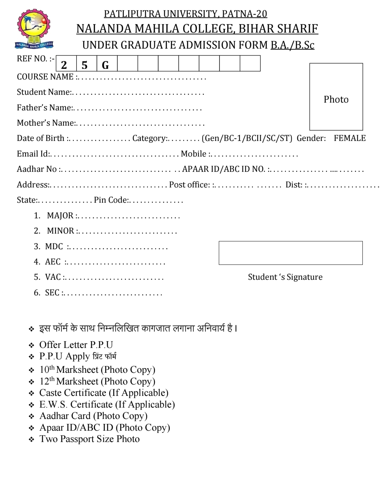

✧ Nalanda Mahila College, Bihar Sharif, is one of the most respected and esteemed constituent colleges for women in Bihar. It offers a plethora of undergraduate programmes across various disciplines making It Inclusive for the female students of this region and their educational needs. The Nalanda Mahila College admission is based on merit so as to give equal opportunity to all deserving students in getting higher education.
Nalanda Mahila College admission here is not complicated, and basically, it is looked into on the basis of the qualifying examination attained merit by candidates. Most undergraduate programmes require completion of 10+2 or by an equivalent examination of any recognised board. Admissions into other courses offered by the college would solely be based on marks obtained in this qualifying examination
The college announces the commencement of admission procedure through its official website and local newspapers. Prospective applicants should keep referring to these announcements.
Candidates are required to fill the application form online or offline from the college campus. Make sure to fill in all the information correctly and completely
Candidates should submit the completed application form along with the following documents:
Pay the specified amount as application fee. The mode of payment and fee amount will be specified in the admission notification.
Completed applications must be submitted with the required documents and payment receipt to the college admission office by the deadline.
Nalanda Mahila College Eligibility Process:
✧ This college usually opens admission for the new academic session about one month or two months after the announcement of the results of the 10+2 examinations by different boards. Some years the dates may vary, but in all cases, prospective students are urged to be alert for announcernents from the college, which are often made on their website or in local newspapers.
Nalanda Mahila College Degree wise Admission Process:


✧ Nalanda Mahila College, 15 courses are offered in 2 degree programmes, all full-time. The following is a list of the course specifics that students can check out.
✴ Nalanda Mahila College BA Admission Process
BA (Bachelor of Arts): BA programme is one flagship course that Nalanda Mahila College offers Admission to the BA programme, which is based on marks in the 10+2 examination. Candidates who have completed the higher secondary with subjects related to arts will apply. The overall percentages in the qualifying exarnination will be considered for forming the merit list.
✴ Nalanda Mahila College B.Sc. Admission Process
B.Sc (Bachelor of Science): Candidates must have completed their 10+2 with science subjects for admission in the B.Sc programme. Selection is merit-based and is normally done on the basis of marks obtained in the qualifying examination along with the specific emphasis. science subjects. The college may have different cut-offs for taking admission for different science disciplines, which are announced at the time of admission.
✴ Nalanda Mahila College BBM Admission Process
BBM (Bachelor of Business Management): The BBM programme of Nalanda Mahila College is custom-made for aspirants wishing to make a career in business management. Nalanda Mahila College admission to this programme is also dependent on marks scored in the 10+2 results. However, there might not be strict stream requirements; candidates who are from the commerce stream or have studied mathematics at the higher secondary level may have an edge in getting an admission.
✴ Nalanda Mahila College BCA Admission Process
BCA (Bachelor of Computer Applications): The eligibility criteria for admission to the BCA programme are the result of 10 plus 2 exams. The admission process is primarily on the percentage achieved in the qualifying examination and possibly with additional weightage for studying mathematics or computer science at the 10+2 level.
✴ Nalanda Mahila College Documents Required
Candidates should submit the completed application form along with the following documents:
- 10+2 or equivalent marks sheet
- 10+2 pass certificate.
- Character certificate from the last attended institution
- Migration certificate (if applicable)
- Caste certificate (for reserved category candidates)
- Recent passport-sized photographs
To confirm Nalanda Mahila College acceptance, the candidate must provide the aforementioned papers for verification.
➪ ADMISSION FORM
